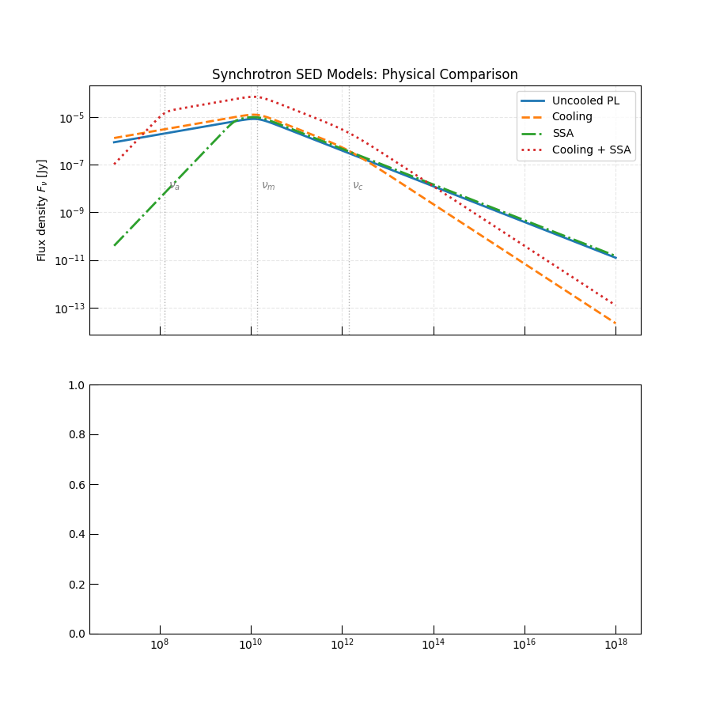

Note
Go to the end to download the full example code.
Comparing Synchrotron SED Models#
Triceratops provides four one-zone phenomenological synchrotron SED classes that cover progressively more complex physical regimes:
PowerLaw_SynchrotronSED— optically thin, uncooled (\(\nu_m\) break only)PowerLaw_Cooling_SynchrotronSED— optically thin with radiative cooling (\(\nu_m\), \(\nu_c\))PowerLaw_SSA_SynchrotronSED— with synchrotron self-absorption, no cooling (\(\nu_a\), \(\nu_m\))PowerLaw_Cooling_SSA_SynchrotronSED— full model: cooling + SSA (\(\nu_a\), \(\nu_m\), \(\nu_c\))
All four are evaluated with the same underlying physical parameters using
from_physics_to_params()
to derive consistent break frequencies and normalizations from \(B\), \(R\),
and microphysical fractions. This makes it easy to see what each successive
physical ingredient adds to the spectral shape.
Warning
All four classes assume a single homogeneous emission zone: uniform \(B\), a single power-law electron distribution, and no spatial stratification. Real sources may require multi-zone extensions.
Relevant API References#
import matplotlib.pyplot as plt
import numpy as np
from astropy import units as u
from triceratops.radiation.synchrotron.SEDs import (
PowerLaw_Cooling_SSA_SynchrotronSED,
PowerLaw_Cooling_SynchrotronSED,
PowerLaw_SSA_SynchrotronSED,
PowerLaw_SynchrotronSED,
)
from triceratops.utils.plot_utils import set_plot_style
Physical Parameters#
We choose a moderately slow-cooling scenario at a luminosity distance of 100 Mpc. The cooling Lorentz factor \(\gamma_c\) is set above \(\gamma_{\min}\) but below \(\gamma_{\max}\), placing the source in the slow-cooling regime for the classes that include \(\nu_c\).
Compute Break Frequencies via Forward Closure#
Each SED class provides a from_physics_to_params() classmethod that
maps physical parameters \((B, R, \gamma_{\min}, \ldots)\) onto the
phenomenological break frequencies and normalization flux.
Note
PowerLaw_SynchrotronSED and
PowerLaw_SSA_SynchrotronSED do not
include radiative cooling and therefore do not require \(\gamma_c\).
The other two classes do require it.
sed_pl = PowerLaw_SynchrotronSED()
sed_cool = PowerLaw_Cooling_SynchrotronSED()
sed_ssa = PowerLaw_SSA_SynchrotronSED()
sed_cool_ssa = PowerLaw_Cooling_SSA_SynchrotronSED()
# Forward closures (returns CGS floats for frequencies and flux)
params_pl = sed_pl.from_physics_to_params(
B=B, R=R, gamma_min=gamma_min, p=p, epsilon_E=epsilon_E, epsilon_B=epsilon_B, luminosity_distance=D_L
)
params_cool = sed_cool.from_physics_to_params(
B=B,
R=R,
gamma_min=gamma_min,
gamma_c=gamma_c,
p=p,
epsilon_E=epsilon_E,
epsilon_B=epsilon_B,
luminosity_distance=D_L,
)
params_ssa = sed_ssa.from_physics_to_params(
B=B, R=R, gamma_min=gamma_min, p=p, epsilon_E=epsilon_E, epsilon_B=epsilon_B, luminosity_distance=D_L
)
params_cool_ssa = sed_cool_ssa.from_physics_to_params(
B=B,
R=R,
gamma_min=gamma_min,
gamma_c=gamma_c,
p=p,
epsilon_E=epsilon_E,
epsilon_B=epsilon_B,
luminosity_distance=D_L,
)
print("--- Break frequencies ---")
print(f"PL : nu_m = {params_pl['nu_m']:.2e} ")
print(f"Cooling : nu_m = {params_cool['nu_m']:.2e} , nu_c = {params_cool['nu_c']:.2e} ")
print(f"SSA : nu_m = {params_ssa['nu_m']:.2e} , nu_a = {params_ssa['nu_a']:.2e} ")
print(
f"Cooling+SSA: nu_m = {params_cool_ssa['nu_m']:.2e} , nu_c = {params_cool_ssa['nu_c']:.2e} , nu_a = {params_cool_ssa['nu_a']:.2e}"
)
--- Break frequencies ---
PL : nu_m = 1.38e+10 Hz
Cooling : nu_m = 1.38e+10 Hz , nu_c = 1.38e+12 Hz
SSA : nu_m = 1.38e+10 Hz , nu_a = 1.17e+09 Hz
Cooling+SSA: nu_m = 1.38e+10 Hz , nu_c = 1.38e+12 Hz , nu_a = 1.29e+08 Hz
Evaluate All Four SEDs#
We now evaluate each SED on the same frequency grid. All normalizations are derived from the same physical parameters, so differences in peak flux reflect the different energy-loss physics of each model.
# Flux unit for output
flux_pl = sed_pl.sed(nu, F_norm=params_pl["F_norm"], nu_m=params_pl["nu_m"], nu_max=params_pl["nu_max"], p=p, s=-0.25)
flux_cool = sed_cool.sed(
nu,
nu_m=params_cool["nu_m"],
nu_c=params_cool["nu_c"],
F_norm=params_cool["F_norm"],
nu_max=params_cool["nu_max"],
s=-0.25,
)
flux_ssa = sed_ssa.sed(
nu,
nu_m=params_ssa["nu_m"],
F_norm=params_ssa["F_norm"],
nu_max=params_ssa["nu_max"],
omega=params_ssa["omega"],
gamma_m=gamma_min,
p=p,
s=-0.25,
)
flux_cool_ssa = sed_cool_ssa.sed(
nu,
nu_m=params_cool_ssa["nu_m"],
nu_c=params_cool_ssa["nu_c"],
F_norm=params_cool_ssa["F_norm"],
nu_max=params_cool_ssa["nu_max"],
omega=params_cool_ssa["omega"],
gamma_m=gamma_min,
p=p,
s=-0.25,
)
fluxes = {
"Uncooled PL": flux_pl.to_value("Jy"),
"Cooling": flux_cool.to_value("Jy"),
"SSA": flux_ssa.to_value("Jy"),
"Cooling + SSA": flux_cool_ssa.to_value("Jy"),
}
line_styles = ["-", "--", "-.", ":"]
Plot: All Four SEDs on the Same Axes#
Annotating the characteristic break frequencies helps identify which physical processes determine each spectral segment.
set_plot_style()
fig, axes = plt.subplots(2, 1, figsize=(9, 9), sharex=True)
for (label, flux), ls in zip(fluxes.items(), line_styles):
axes[0].loglog(nu.to_value(u.Hz), flux, ls=ls, lw=2, label=label)
# Annotate breaks from the full model
for nu_key, text, ypos in [
("nu_a", r"$\nu_a$", 1e-8),
("nu_m", r"$\nu_m$", 1e-8),
("nu_c", r"$\nu_c$", 1e-8),
]:
val = params_cool_ssa[nu_key].to_value("Hz")
axes[0].axvline(val, color="gray", ls=":", lw=1, alpha=0.6)
axes[0].text(val * 1.2, ypos, text, fontsize=10, color="gray")
axes[0].set_ylabel(r"Flux density $F_\nu$ [Jy]")
axes[0].set_title("Synchrotron SED Models: Physical Comparison")
axes[0].legend(loc="upper right")
axes[0].grid(True, which="both", ls="--", alpha=0.3)

Log–Log Derivative Panel (Spectral Slopes)#
The spectral slope \(d\log F_\nu / d\log\nu\) reveals the distinct power-law segments of each SED. Standard slopes are:
\(+5/2\) (optically thick SSA below \(\nu_a\))
\(+1/3\) (low-frequency optically thin tail below \(\nu_m\))
\(-(p-1)/2\) (standard power-law above \(\nu_m\) in uncooled)
\(-p/2\) (steepened by cooling above \(\nu_c\) in slow-cooling)
log_nu = np.log(nu.to_value(u.Hz))
for (label, flux), ls in zip(fluxes.items(), line_styles):
log_f = np.log(flux)
slope = np.gradient(log_f, log_nu)
axes[1].semilogx(nu.to_value(u.Hz), slope, ls=ls, lw=2, label=label)
for ref_slope, text in [
(1 / 3, r"$+1/3$"),
(-(p - 1) / 2, rf"$-{(p - 1) / 2:.2f}$"),
(-p / 2, rf"$-{p / 2:.2f}$"),
(5 / 2, r"$+5/2$"),
]:
axes[1].axhline(ref_slope, ls="--", color="gray", lw=0.8, alpha=0.6)
axes[1].text(1.1e7, ref_slope + 0.05, text, fontsize=9, color="gray")
axes[1].set_xlabel(r"Frequency $\nu$ [Hz]")
axes[1].set_ylabel(r"Spectral slope $d\log F_\nu / d\log\nu$")
axes[1].set_ylim(-4, 4)
axes[1].legend(loc="lower left")
axes[1].grid(True, which="both", ls="--", alpha=0.3)
plt.tight_layout()
plt.show()

Discussion: When to Use Each Class#
The choice of SED class should match the physical regime of the source:
PowerLaw_SynchrotronSED: Use when both SSA and radiative cooling can be neglected — for example, young sources observed at frequencies well above the self-absorption frequency and with cooling times much longer than the dynamical time. Simplest closure.
PowerLaw_Cooling_SynchrotronSED: Add when the cooling time of electrons at \(\nu_m\) is comparable to or shorter than the source age. Produces a second break at \(\nu_c\) and steepens the spectrum above it.
PowerLaw_SSA_SynchrotronSED: Add when the source becomes optically thick below a self-absorption frequency \(\nu_a\). Common in young, dense SNe radio shells. The low-frequency spectral slope changes from \(+1/3\) to \(+5/2\) below \(\nu_a\).
PowerLaw_Cooling_SSA_SynchrotronSED: The complete model. Use for broadband modeling whenever radio through optical/X-ray data are available and both \(\nu_a\) and \(\nu_c\) are potentially within the observed band.
See Methods: Single-Zone Synchrotron SEDs for a detailed derivation of all spectral regimes, and the forward-closure example for how the break frequencies scale with physical parameters.
Total running time of the script: (0 minutes 0.223 seconds)